ManaGEM · Design system
One design foundation for three ManaGEM experiences.
I created this design system to give ManaGEM a consistent foundation. GEMIS formally adopted it, and I applied it to the product redesign, the Take-On onboarding experience and the ManaGEM landing page.
- Created
- By me — foundations, components and patterns
- Applied
- By me — to the product redesign, Take-On and the landing page
- Reviewed
- With the GEMIS manager and full-stack developer, in the prototype review
- Approved
- By the GEMIS manager — the design direction now being implemented
- Adopted
- By GEMIS, as its design system for ManaGEM
01The system in action
One foundation, applied three ways.
The product redesign, Take-On and the landing page are built from the same decisions. Below, each decision is shown in all three experiences, with what is shared and what deliberately varies.
- 01
The need
ManaGEM had grown feature by feature, and screens no longer behaved alike.
- 02
The foundation
I created one set of colours, type, components and patterns.
- 03
Adoption
GEMIS formally adopted it as the design system for ManaGEM.
- 04
Application
I used it for the product redesign, Take-On and the landing page.
- 05
What it supports
New modules and experiences start from known parts.


Typography
One interface typeface keeps the three experiences recognisably the same product. Figures always switch to a monospaced face so amounts line up; the landing page scales the same type up for reading at a distance.
InvoicesPage title 24 / 600
Eight invoices, R 535,000 outstandingBody 13 / 400
INV-2026-0142 · R 425,000Figures · JetBrains Mono
Review customersPage title 22 / 600
Ten records found in your filesBody 13.5 / 400
82% confidenceFigures · JetBrains Mono
One job, from enquiry to paymentSection title 48 / 600, shown smaller
ManaGEM keeps the job, the money and the stock on one record.Body 17 / 400
R 2,000 / monthFigures · IBM Plex Mono
- Shared
- Outfit for all interface text; 600 weight for every heading; a monospaced face for figures and references.
- Varies
- The landing page uses display sizes (48–72px) and IBM Plex Mono, the fallback already named in the product’s font stack.
Colour
Navy and slate do the structural work in all three, so colour can be saved for meaning: one accent for “act here”, and a fixed semantic set for status.
#0F172AAction#0EA5E9Done#10B981Attention#F59E0BProblem#EF4444Duplicate#8B5CF6#0F172AProgress#0EA5E9Done#10B981Attention#F59E0BProblem#EF4444Duplicate#8B5CF6#0B1222Sign-up#00BFA6Links#0EA5E9Good#06734EWarn#92400EBad#B91C1C- Shared
- Navy #0F172A for structure, sky for focus and links, the emerald / amber / red family for status — always with a word.
- Varies
- The landing page adds GEM teal #00BFA6 for sign-up only, so marketing actions never look like actions inside the product.
Buttons and actions
Each area has one clearly primary action next to a quieter secondary one, with an icon that says what will happen. Shape and colour change with the context; the hierarchy does not.
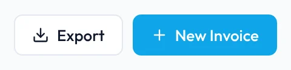
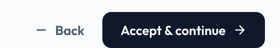
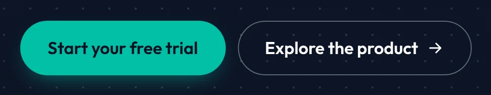
- Shared
- One primary per area; secondary is outlined or ghost; leading or trailing icon; same Outfit label.
- Varies
- Take-On’s primary is navy, with sky kept for an accent button; the landing page uses larger pill buttons with a teal fill reserved for sign-up.
Form fields
Labels always sit above the field and required fields are marked, so people can scan a form top to bottom and know what is still needed. Focus is a sky border, the same signal as the current page in the sidebar.
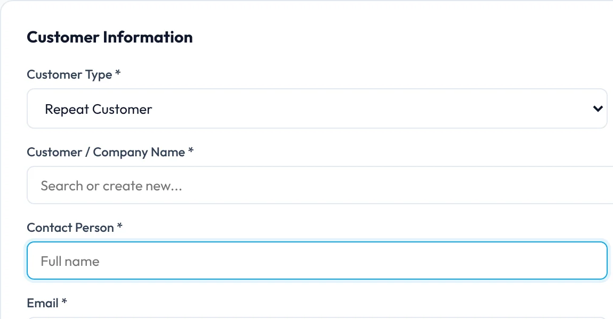
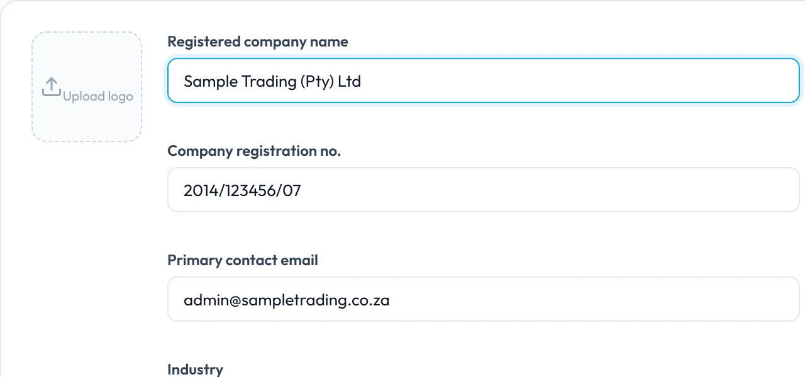
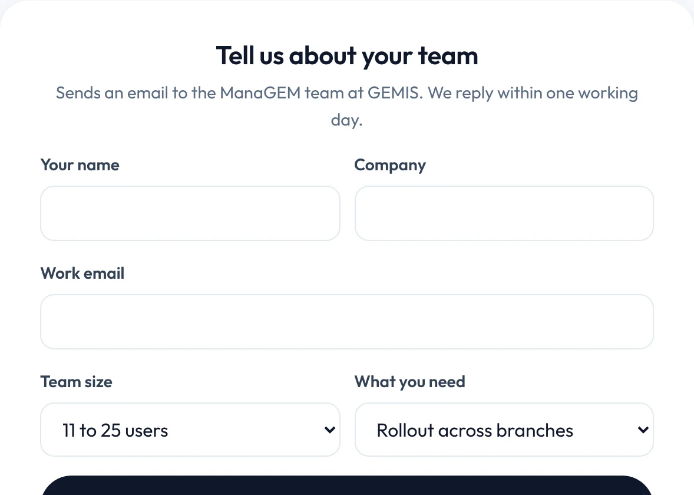
- Shared
- Label above · white field · 1px #E2E8F0 border · sky focus · two-column rows for related fields.
- Varies
- The landing form is larger (16px text, 48px fields), as suits a public sign-up form; the product keeps fields compact for daily data entry.
Cards and information
Cards group one idea with its key figure first, so a page can be read by its headlines before any detail.
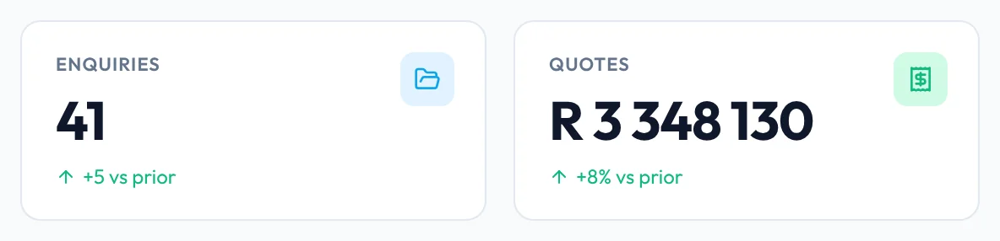
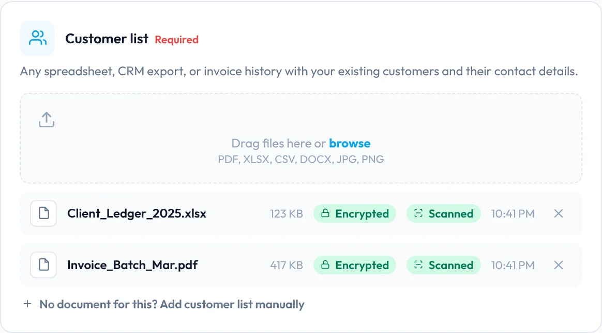
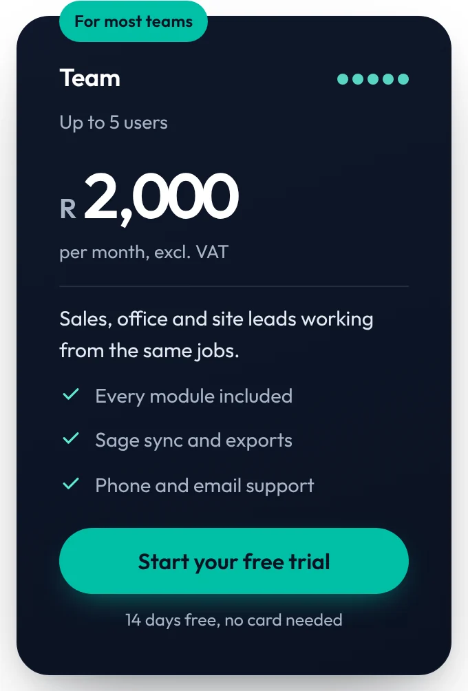
- Shared
- White card, 1px border, soft small shadow; the most important figure or title first.
- Varies
- Radius grows with the context — 12px in the product, 14px in Take-On, 24px on the landing page — and marketing cards can be inverted to navy for emphasis.
Status and feedback
Status always pairs a colour with a word, so it survives a quick glance, a grey-scale print-out and colour-blindness. The same four meanings appear wherever records can be in different states.
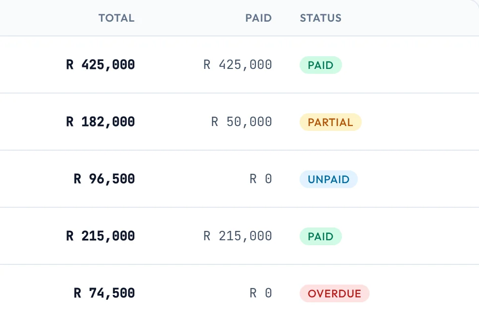
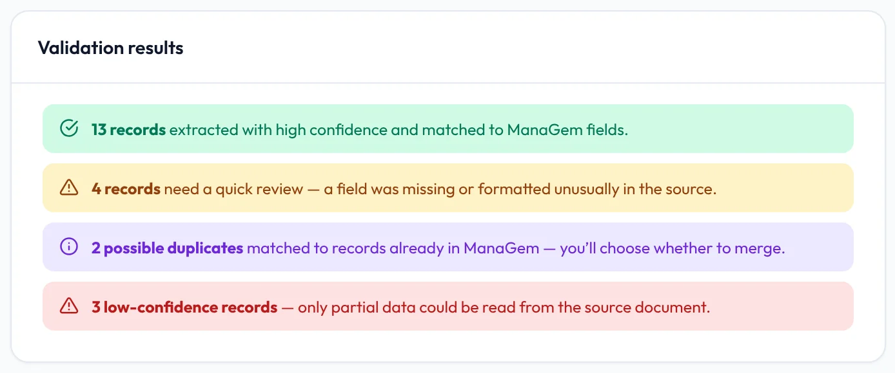
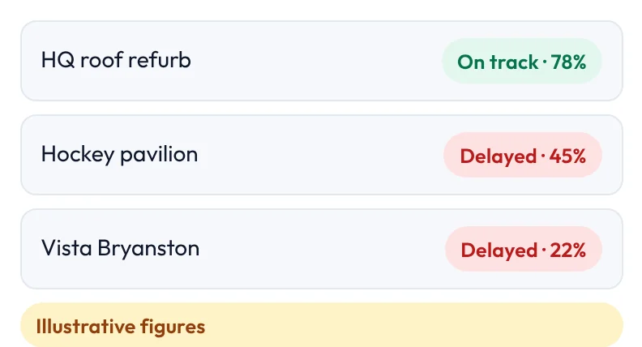
- Shared
- Emerald = done or on track, amber = needs attention, red = problem, purple = possible duplicate; text colour is the dark shade of each hue.
- Varies
- Take-On explains each status in a sentence because people are checking AI-extracted data for the first time; the landing page labels its sample figures as illustrative.
Layout and hierarchy
Every screen reads in the same order — where you are, the headline figures, then the detail — and spacing is tighter inside a group than between groups, so blocks separate without extra lines.
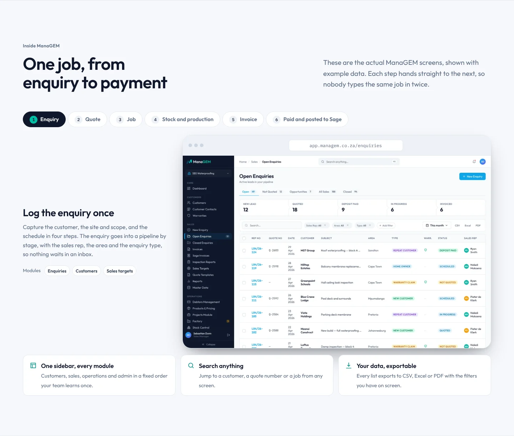
- Shared
- A fixed frame (sidebar, stepper or section header), headline figures before detail, the same card and table parts inside.
- Varies
- Density: the product packs information for daily use, Take-On gives one task per screen, and the landing page gives each message a full section.
| Decision | Product redesign | Take-On | Landing page |
|---|---|---|---|
| Interface typeface | Outfit | Outfit | Outfit |
| Figures typeface | JetBrains Mono | JetBrains Mono | IBM Plex Mono |
| Page / section title | 24 / 600 | 22 / 600 | 48 / 600 (hero 72) |
| Body text | 13px | 13.5px | 17px |
| Primary action | #0EA5E9 white text | #0F172A white text | #00BFA6 navy text |
| Button shape | 7px radius · 13 / 500 | 9px radius · 13 / 600 | Pill · 15–17 / 600 |
| Field | 7px radius · label 12 / 500 | 8px radius · label 12 / 600 | 12px radius · label 14 / 600 |
| Card radius | 12px | 14px | 24px |
| Border | #E2E8F0 | #E2E8F0 | #E2E8F0 |
| Status | Emerald · amber · red · purple badges | Same set, as sentences | Good · warn · bad tags |
Values read from each build’s stylesheet. Names and figures in the captures are demo or sample data.
02Foundations
Colour, type and shape, defined once.
Each foundation answers a problem in a business-management product: long sessions, dense records and many modules. The board renders the actual values live; the tables list each one and where it is used.
Typography for long working sessions
Outfit has open, even letterforms that stay legible at the 11–13px sizes dense screens need. Amounts, invoice numbers and references switch to JetBrains Mono, whose equal-width digits line up in columns, so totals can be compared down a table without reading each one.
Colour that carries meaning
Navy and slate carry the structure; one sky blue marks what you can act on and where you are. Emerald, amber, red and purple mean done, needs attention, problem and possible duplicate in every module — and each always comes with a word.
Spacing and hierarchy for scanning
Screens follow one reading order: title, headline figures, tabs, toolbar, then records. Small gaps inside a group and larger gaps between groups let people scan many records and still see where one block ends.
Components that behave the same everywhere
Every module uses the same KPI card, toolbar, table, tabs and drawer. Once someone learns how filtering or editing works in Invoices, it works the same way in Enquiries or Stock — and each part only has to be specified once.
Navigation and patterns that connect modules
The five-group sidebar, breadcrumb and global search frame every screen, so a new client always knows where they are. Drawers keep the list in view while editing, and stepped forms end in a review before anything is committed.
Colour
Navy and slate structure · one sky accent · four semantic pairs#0F172ASidebar, primary text#1E293BSidebar hover#0EA5E9Primary action, focus, active#0284C7Primary hoverTypography
Outfit for the interface · JetBrains Mono for figures- KPI value32 / 700 · −0.02emR 535K
- Page title24 / 600 · −0.01emInvoices
- Card heading15 / 600Current projects
- Body · table13 / 400Eight invoices, R 535,000 outstanding
- KPI label11 / 600 · caps · 0.05emTotal billed
- FiguresJetBrains MonoINV-2026-0142 · R 425,000
Navigation
Grouped sections · active · count · alertSales
New Enquiry Open Enquiries 51 InvoicesOperations
Debtors Management Factory 3Status badges
Words and colour, never colour aloneA selected row (sky-50 fill, checked box) whose status moves through the invoice states.
Form fields
Label above · focus ring · two-column rowsTabs and sub-tabs
Counts · warning dot · active stateKPI card
Label · value · delta · icon · hover liftR 3348K
↑ +8% vs prior
R 955K
↓ −2% vs prior
Demo values from the prototype. Hover raises the card by 1px with the medium shadow.
Progress stepper
Multi-step forms · completed steps show a tick- 1Step 1Customer
- 2Step 2Site & scope
- 3Step 3Schedule
- 4Step 4Review
Radius and elevation
Seven radii · four shadows and a focus ring4Checkbox, kbd6Nav item, pager7Buttons, inputs, sub-tabs8Search, icon tiles10Toolbar, mini stats12Cards, tables, KPIs999Badges, chips, toggle
Colour
| Token | Value | Use |
|---|---|---|
| Navy 900 | #0F172A | Sidebar, primary text |
| Navy 800 | #1E293B | Sidebar hover |
| Sky 500 | #0EA5E9 | Primary action, focus, active |
| Sky 600 | #0284C7 | Primary hover |
| Sky 100 | #E0F2FE | Selected, info fill |
| Sky 50 | #F0F9FF | Selected rows |
| Canvas | #F8FAFC | Surfaces and fills |
| Slate 100 | #F1F5F9 | Surfaces and fills |
| Border | #E2E8F0 | Every 1px line |
| Slate 300 | #CBD5E1 | Surfaces and fills |
| Text 3 | #94A3B8 | Tertiary text, icons |
| Text 2 | #64748B | Secondary text |
| Slate 600 | #475569 | Surfaces and fills |
| Slate 700 | #334155 | Surfaces and fills |
| Emerald | #10B981 #D1FAE5 text #047857 | Paid · Verified · up |
| Amber | #F59E0B #FEF3C7 text #B45309 | Partial · Needs review |
| Red | #EF4444 #FEE2E2 text #B91C1C | Overdue · Error · down |
| Purple | #8B5CF6 #EDE9FE text #6D28D9 | Possible duplicate |
Typography
| Role | Size / weight | Sample |
|---|---|---|
| KPI value | 32 / 700 · −0.02em | R 535K |
| Page title | 24 / 600 · −0.01em | Invoices |
| Pipeline count | 24 / 700 | 18 |
| Drawer title | 16 / 600 | Invite new user |
| Card heading | 15 / 600 | Current projects |
| Body · table | 13 / 400 | Eight invoices, R 535,000 outstanding |
| Field label | 12 / 500 | Contact person |
| KPI label | 11 / 600 · caps · 0.05em | Total billed |
| Badge | 11 / 500 · caps · 0.04em | Overdue |
| Nav section | 10 / 600 · caps · 0.08em | Operations |
| Figures | JetBrains Mono | INV-2026-0142 · R 425,000 |
Layout and spacing
| Measure | Value |
|---|---|
| Sidebar | 240px · 64px collapsed |
| Top bar | 56px high, 24px side padding |
| Search field | Up to 380px |
| KPI grid | 4 columns, 16px gap |
| Quick actions | 4 columns, 12px gap |
| Drawer | 480px |
| Spacing in use | 4 · 6 · 8 · 10 · 12 · 14 · 16 · 18 · 20 · 24px |
Spacing values are those used across the components; they are not declared as a separate token scale.
Radius
| px | Used for |
|---|---|
| 4 | Checkbox, kbd |
| 6 | Nav item, pager |
| 7 | Buttons, inputs, sub-tabs |
| 8 | Search, icon tiles |
| 10 | Toolbar, mini stats |
| 12 | Cards, tables, KPIs |
| 999 | Badges, chips, toggle |
Elevation
| Level | Value |
|---|---|
| Small | 0 1px 2px rgba(15,23,42,.04)Cards at rest |
| Medium | 0 4px 12px rgba(15,23,42,.06)KPI and quick-action hover |
| Large | 0 12px 32px rgba(15,23,42,.10)Raised surfaces |
| Drawer | −10px 0 30px rgba(15,23,42,.12)Side drawer |
| Focus ring | 0 0 0 3px rgba(14,165,233,.12)Focused inputs |
Icons and motion
| Item | Value |
|---|---|
| Icons | 16px outline, 2px stroke, round caps |
| In buttons | 14px |
| Icon tiles | 32px (KPI), 40px (quick actions) |
| Transitions | 100–200ms: buttons 120, toggle 120, KPI 150, sidebar and drawer 200 |
| Borders | 1px #E2E8F0 everywhere |
03Navigation and application structure
From expanding menus to five labelled groups.
In the original interface, each section expanded in place into a long list of sub-pages. The system replaces that with five groups — Core, Customers, Sales, Operations, Admin — where every destination stays visible and the user’s location is always marked.
Original interface


| Element | Specification | States in the prototype |
|---|---|---|
| Nav item | 13px, 7×10px padding, 6px radius, 16px icon | Default · hover (navy 800, white text) · active (10% sky fill, 3px sky left edge, sky icon) |
| Section label | 10 / 600 caps, 0.08em, slate 500 | — |
| Count badge | 10px pill, white 8% fill | Default · alert (amber 20% fill, amber text) |
| Sidebar | 240px, navy 900, sticky | Expanded · collapsed to 64px icons (200ms) · off-canvas on mobile with overlay |
| Top bar | 56px, breadcrumb · search · bell · avatar | Search focus (sky border, white fill) · bell with red unread dot |
| Breadcrumb | Home / section / current (600) | Home hidden on small screens |
| User | 28px gradient avatar, name 12/500, role 11 slate | Always shows who is signed in and their role |


04Core components
The parts every module is built from.
Each component below exists in the redesign or Take-On prototype. Its purpose, parts, variants and behaviour are taken from the prototype’s markup and styles; each comes with a real capture.
KPI cards
Put the figures a manager checks first at the top of the dashboard and each module.
- Anatomy
- Caps label · 32px figure · delta line · 32px tinted icon tile
- Variants
- Delta up (emerald), down (red), muted
- Behaviour
- Hover lifts 1px with the medium shadow (150ms)

Toolbar and filters
One place to search, filter and export any list.
- Anatomy
- Search field · removable filter chips · dashed “Add filter” · date range · CSV / Excel / PDF
- Variants
- Chip, add-chip, export group
- Behaviour
- Search focus turns the field white with a sky border; chips’ × and add-chip highlight on hover

Data tables
Dense records that stay readable: references and amounts in mono, status in words.
- Anatomy
- Checkbox · mono reference · bold name with sub-line · figures right-aligned · status badge · row actions
- Variants
- Sortable headers; responsive card layout on mobile
- Behaviour
- Sortable header and row hover tint; selected rows fill sky 50

Bulk action bar
Act on several selected records without leaving the list.
- Anatomy
- Selection count · actions · destructive action in red
- Variants
- Default and danger buttons
- Behaviour
- Slides up from the bottom when rows are selected

Pagination
Move through long lists and choose page size.
- Anatomy
- Result count · page-size select · page buttons
- Variants
- —
- Behaviour
- Hover tint; current page filled sky

Tabs
Switch between views of one module, with counts that show where work is waiting.
- Anatomy
- Label · count pill · optional amber warning dot
- Variants
- Tabs (underline), sub-tabs (filled)
- Behaviour
- Active tab: sky text and 2px underline; active sub-tab: navy fill, white text

Sub-tabs
Group related areas inside one module instead of separate menu items.
- Anatomy
- Label · count
- Variants
- Default · active · hover
- Behaviour
- Twelve Stock Control areas live here rather than in the sidebar

Pipeline
Show where work sits in a process at a glance.
- Anatomy
- Stage label · count · connecting arrow
- Variants
- Enquiry pipeline; factory funnel with progress bars
- Behaviour
- Stages are selectable; the active stage fills sky 50

Drawer
Create or edit a record without losing the list behind it.
- Anatomy
- Header with close · scrolling body · footer actions
- Variants
- Form drawer (Invite user); review drawer (Take-On)
- Behaviour
- Slides in from the right over a dimmed page (200ms); full width on mobile

Form fields
Consistent capture across every form.
- Anatomy
- 12/500 label above · 9×12px input · 7px radius · required asterisk
- Variants
- Text, select, textarea, two-column row, toggle
- Behaviour
- Focus: sky border with a 3px sky ring

Quick actions
Shortcuts to the most common tasks from the dashboard.
- Anatomy
- 40px sky icon tile · title · sub-line
- Variants
- —
- Behaviour
- Hover: sky border and medium shadow

Empty state
Explain a screen that has nothing to show yet.
- Anatomy
- 64px icon circle · heading · message · action
- Variants
- —
- Behaviour
- Used in the prototype for modules not yet designed

Take-On components built on the same system


05Component states
Only the states the prototypes actually have.
A state is listed as present only where the prototype’s styles define it and a screen uses it. Common patterns the prototypes do not include — saving indicators, success toasts, inline error messages — are not added here.
| Component | Default | Hover | Focus | Active / selected | Disabled | Expanded / open | Loading | Empty |
|---|---|---|---|---|---|---|---|---|
| Nav item | ● | ● | — | ● | — | ● collapse | — | — |
| Button | ● | ● | — | — | Take-On only | — | — | — |
| Input / select | ● | — | ● | — | — | — | — | — |
| Search | ● | — | ● | — | — | — | — | — |
| Table row | ● | ● | — | ● | — | — | — | — |
| Tab / sub-tab | ● | ● | — | ● | — | — | — | — |
| Pager | ● | ● | — | ● | — | — | — | — |
| Checkbox | ● | — | — | ● | — | — | — | — |
| Toggle | ● | — | — | ● on | — | — | — | — |
| KPI / quick action | ● | ● | — | — | — | — | — | — |
| Drawer / bulk bar | — | — | — | — | — | ● | — | — |
| Take-On processing | — | — | — | — | — | — | ● | — |
| Module screen | — | — | — | — | — | — | — | ● |
- Validation appears in Take-On as gating: “Accept & continue” stays disabled until every consent is ticked, and the upload step lists what is still required.
- Error is expressed as status — Overdue, Error in the Sage sync, Low confidence — not as form error messages.
- Focus styling is defined for inputs and search. Buttons and nav items rely on the browser’s default focus outline.


06Data presentation
Important information first, in words people can act on.
The six client conversations pointed to one need: see important business information immediately instead of searching through screens. These patterns are how the system answers that.
KPIs at the top
Every module that has headline figures opens with KPI cards before any list.
Financial figures in mono
Amounts, invoice numbers and references use the monospaced face, right-aligned in tables.
Semantic status
Emerald, amber, red, sky and purple badges, each with a word: Paid, Partial, Overdue, Unpaid, Duplicate.
Messages on the dashboard
A messages banner sits above the KPIs, and the bell carries an unread dot.
Search everywhere
A search field in the top bar on every screen, plus a search field in each list’s toolbar.


07Forms and workflow
Steps you can see, and a review before committing.
Longer forms are split into visible steps and end in a review of everything entered. Take-On applies the same pattern at a larger scale, with eleven steps and a consent step that gates progress.


After Create Enquiry, the prototype returns to the enquiry list. It does not show a separate saving or saved message.
08Responsive behaviour
The same system, rearranged for smaller screens.
The redesign prototype defines five breakpoints. Below 900px the sidebar moves off-canvas behind a menu button; below 640px tables become stacked cards that keep each label.
| Breakpoint | What changes |
|---|---|
| ≤ 1024px | KPI grid from 4 to 2 columns |
| ≤ 900px | Sidebar off-canvas with an overlay; menu button appears; search fills the bar |
| ≤ 800px | Quick actions and mini stats to 2 columns |
| ≤ 720px | Sign-in panel stacks |
| ≤ 640px | KPIs to 1 column; pipeline to 2; drawer full width; page title 20px; tables become labelled cards; breadcrumb drops Home |


09Accessibility and usability
What the system does well, and what I propose to strengthen.
Contrast was measured for every text colour pair the system uses. No formal accessibility audit has been carried out, and no WCAG compliance is claimed. The improvements below are my proposals; they have not been adopted by GEMIS.
Built in
- Status always has a word as well as a colour.
- Labels sit above fields; required fields are marked.
- Inputs and search have a visible focus ring.
- Navigation always shows the current page, breadcrumb and signed-in role.
- The same patterns repeat in every module, so learning one screen helps with the next.
- Take-On’s navy primary button and the landing page’s navy-on-teal button already pass comfortably.
Contrast in the current implementation
| Pair | Ratio | Result |
|---|---|---|
| Text #0F172A on white | 17.9 : 1 | Meets 4.5 : 1 |
| Secondary text #64748B on white | 4.8 : 1 | Meets 4.5 : 1 |
| Badge text on its tint (all five) | 4.5–6.0 : 1 | Meets 4.5 : 1 |
| Nav text #CBD5E1 on navy | 12.0 : 1 | Meets 4.5 : 1 |
| Take-On primary: white on navy #0F172A | 17.9 : 1 | Meets 4.5 : 1 |
| Landing CTA: #0B1222 on teal #00BFA6 | 8.0 : 1 | Meets 4.5 : 1 |
| Product primary: white on sky #0EA5E9 | 2.8 : 1 | Below 4.5 : 1 |
| Sky text on white: links, active tab, invoice references | 2.8 : 1 | Below 4.5 : 1 |
| KPI change up: emerald #10B981 on white | 2.5 : 1 | Below 4.5 : 1 |
| KPI change down: red #EF4444 on white | 3.8 : 1 | Below 4.5 : 1 |
| Tertiary text #94A3B8 on white | 2.6 : 1 | Below 4.5 : 1 |
Proposed improvements
| Element | Current | Proposed | Ratio after | Why this value |
|---|---|---|---|---|
| Primary button fill | #0EA5E9 2.8 : 1 | #0369A1 sky 700 | 5.9 : 1 | Stays in the sky family, so the brand accent is unchanged in hue; hover moves to sky 800 #075985 (7.6 : 1). |
| Links, active tab, references | #0EA5E9 2.8 : 1 | #0369A1 sky 700 | 5.9 : 1 | Text in the accent colour needs the darker shade; #0EA5E9 stays for focus rings, icons on navy (6.4 : 1) and fills. |
| Tab underline, selected borders | #0EA5E9 2.8 : 1 | #0284C7 sky 600 | 4.1 : 1 | Non-text indicators need 3 : 1; sky 600 is already the system’s hover colour. |
| KPI change, up | #10B981 2.5 : 1 | #047857 | 5.5 : 1 | The emerald badge text colour the system already uses. |
| KPI change, down | #EF4444 3.8 : 1 | #B91C1C | 6.5 : 1 | The red badge text colour the system already uses. |
| Tertiary text | #94A3B8 2.6 : 1 | #64748B for readable text | 4.8 : 1 | Keep #94A3B8 only for disabled states and decorative icons. |
Ratios calculated with the WCAG relative-luminance formula against white. The approved product design, and every capture on this page, still uses the current values.
10Supporting future work
A foundation new screens can start from.
Because colour, type, components and states are already defined, a new ManaGEM module or GEMIS experience starts from known parts rather than a blank page — as Take-On and the landing page already did.
New modules
Reuse the page structure: header, KPI cards, tabs, toolbar, table, pager.
New experiences
Take-On shows a new flow built on the same tokens and components with only a few additions: stepper, upload area, confidence badges.
Marketing
The landing page shows how the system extends for marketing — a teal accent, darker bands — while the product screens stay unchanged.
See the system in the case study.
How the design system fits the wider ManaGEM redesign — from the navigation decision to Take-On.
Back to the case study